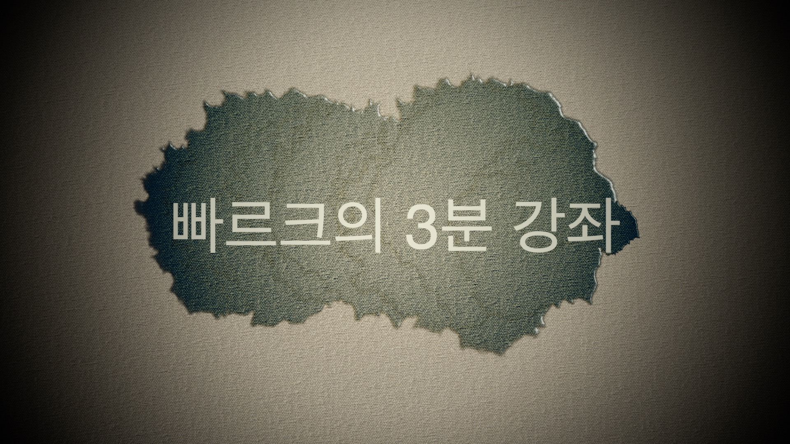
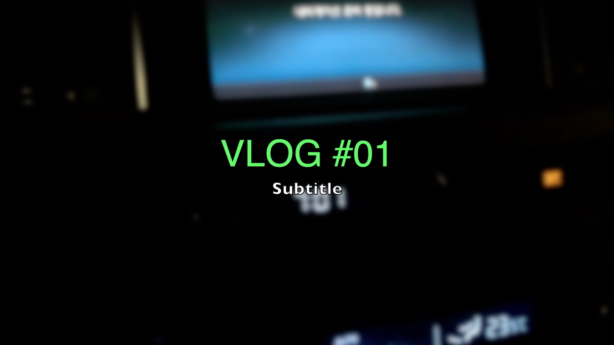
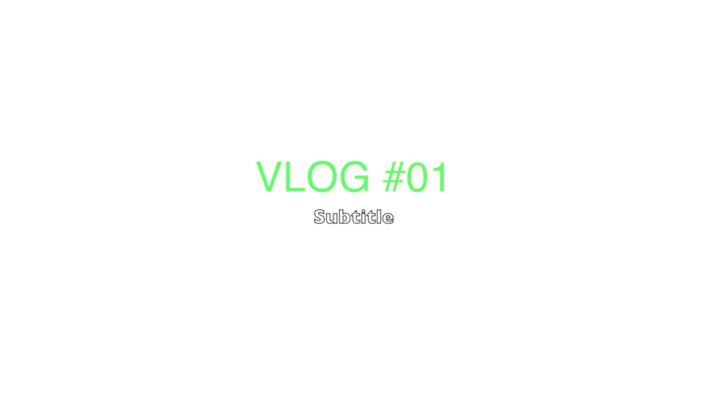
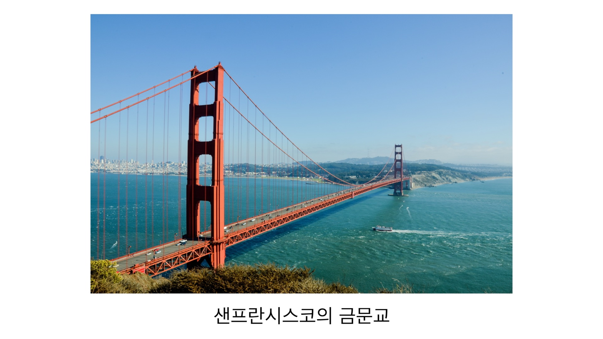
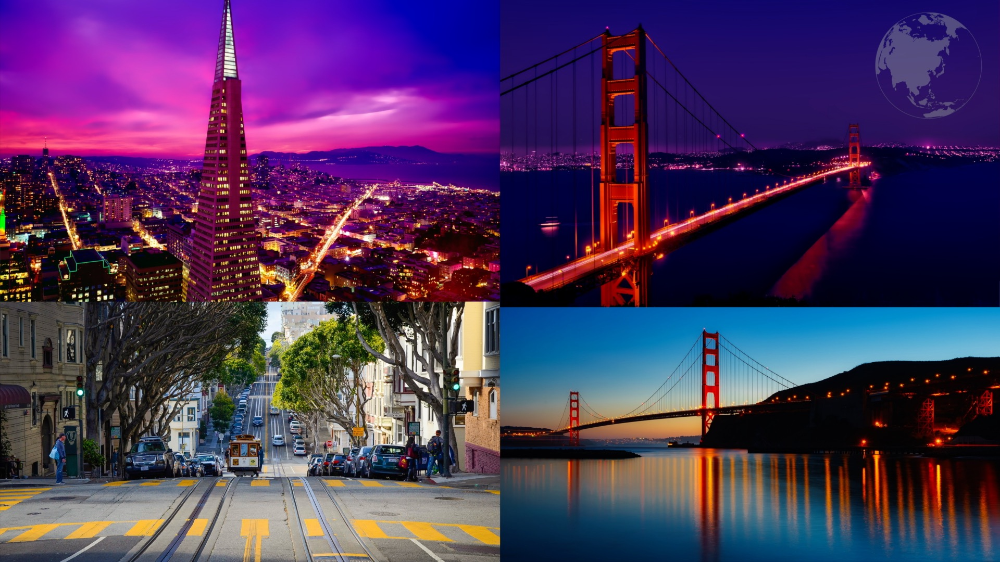
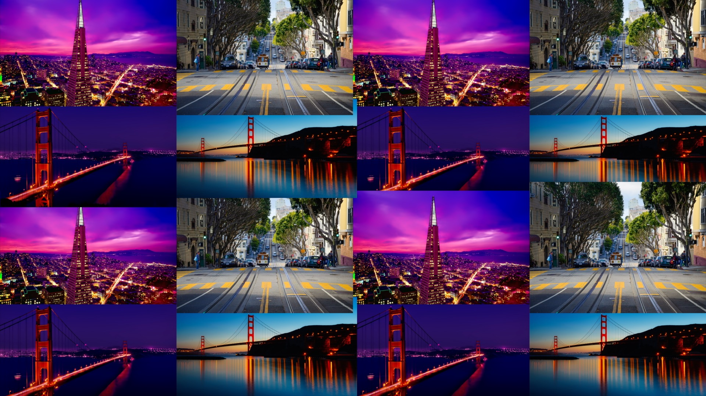
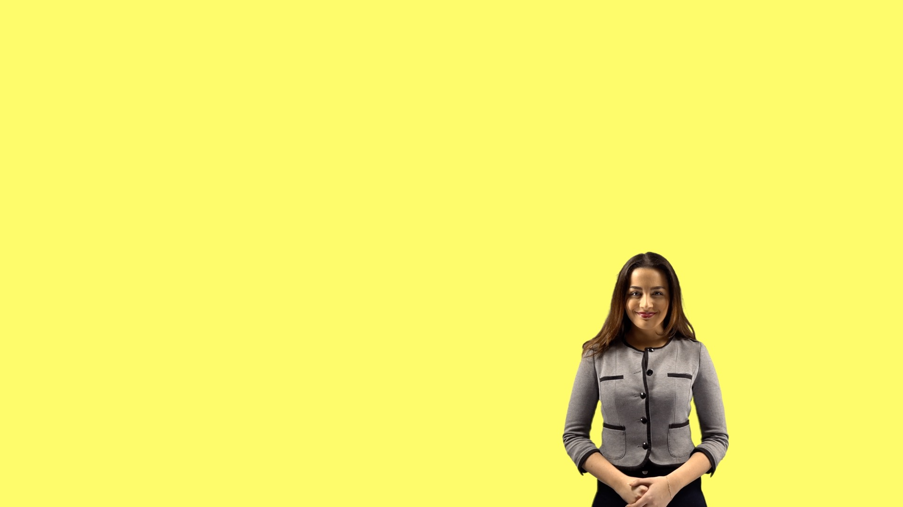
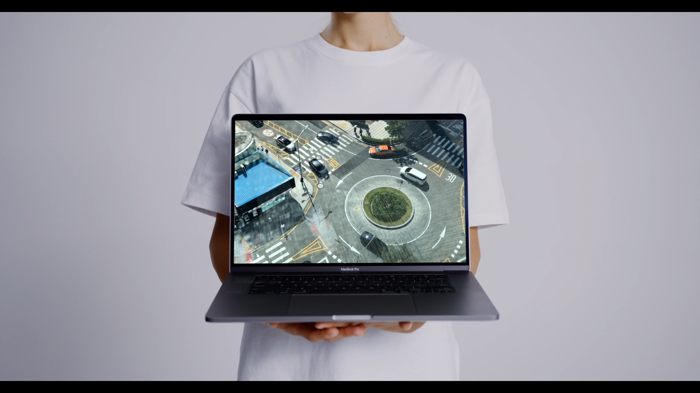
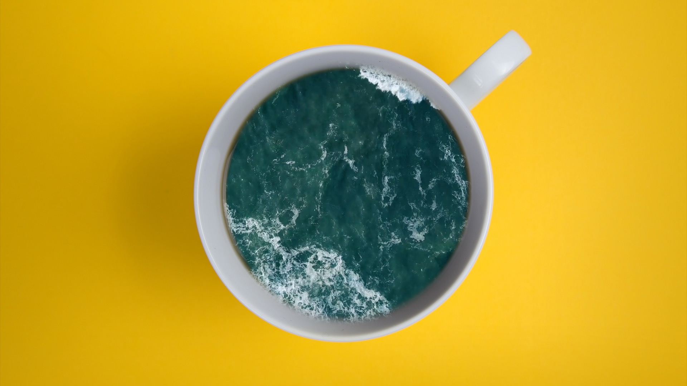

-
1일 차.파이널 컷 프로를 소개합니다
4
-
2일 차.파이널 컷 프로 무료 체험판 설치
10
-
3일 차.파이널 컷 프로의 인터페이스와 메뉴
16
-
4일 차.10분 안에 살펴보는 파이널 컷 프로 유튜브 영상 편집
21
-
5일 차.파이널 컷 프로 템플릿 설치하기
23
-
6일 차.파이널 컷 프로 단축키 BEST 36
32
02. 시작이 반이다! 기초 컷편집하기
-
7일 차.라이브러리, 이벤트, 프로젝트
36
-
8일 차.영상 불러오고 배치하기
54
-
9일 차.기초 컷편집과 타임코드
68
-
10일 차.구간 선택 편집과 3점 편집
79
03. 쉽고 간편하게 자막 편집하기



-
11일 차.기초 자막 넣기
88
-
12일 차.3D 텍스트 자막 넣기
103
-
13일 차.오프닝 타이틀 만들기
114
-
14일 차.외국어 캡션 자막 넣기
124
04. 영상의 퀄리티를 높이는 오디오 편집하기
-
15일 차.기초 오디오 편집하기
144
-
16일 차.내레이션, 음악, 효과음 넣기
156
-
17일 차.꼭 알아두면 좋은! 재미있는 오디오 이펙트 살펴보기
173
05. 작업한 영상을 파일로 출력하기
-
18일 차.영상 파일 출력하기
188
-
19일 차.화면을 캡처해 유튜브 썸네일 만들기
201
06. 초보에서 중수로 나아가는 다양한 편집 스킬



-
20일 차.영상의 속도 조정하기
216
-
21일 차.사진으로 편집하는 영상 – 포지션, 스케일
227
-
22일 차.사진으로 편집하는 영상 – 회전, 앵커 포인트, 불투명도
240
-
23일 차.컴파운드 클립과 J컷 L컷 편집 기법
248
-
24일 차.멀티 캠 편집
258
07. 내 영상에 아름다움을 더하는 색 보정 작업하기
-
25일 차.색 보정 초보에서 시작하기
274
-
26일 차.내 영상을 영화처럼 색 보정하기
282
-
27일 차.특정 부분만 색 보정하기
290
08. 하나를 알면 열에 응용하는 마스크와 합성 작업하기



-
28일 차.블렌드 모드를 사용해 자연스럽게 영상 합성하기
322
-
29일 차.그린 스크린 합성(크로마키 기법)
326
-
30일 차.마스크 기능을 활용해 영상 합성하기
333
- 동영상 강좌 (12분 16초) 학습 중
- 실습 파일예제 파일/8장 키잉 크로마키 마스크/8-3 마스크 기능
부록 A. 파이널 컷 프로 메뉴 살펴보기
부록 B. 파이널 컷 프로 10.6의 새 기능 오브젝트 트래커